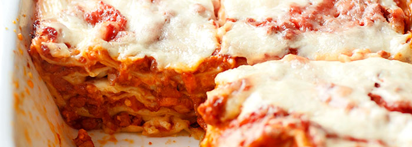

Lasagna

Description
Niezawodny przepis na najlepszą lasagne
- 15 płatów lasagne (gotowych lub DOMOWYCH)
- 150 g tartego parmezanu
- 3 łyżki oliwy
- Na oliwie, w dużym garnku, zeszklić drobno posiekaną cebulę, dodać posiekany w drobną kosteczkę seler naciowy oraz startą marchewkę (warzywa można też rozdrobnić w malakserze).
- Obsmażyć, następnie przesunąć na bok i w wolne miejsce włożyć pokrojony w drobną kosteczkę boczek. Zrumienić i wymieszać z warzywami.
- Przesunąć wszystko na bok garnka i partiami wkładać mięso: włożyć 1/3 część mięsa i obsmażyć mieszając co chwilę, aż zmieni kolor z czerwonego na brązowy. Następnie wymieszać z warzywami i boczkiem, przesunąć na bok, powtórzyć z resztą mięsa.